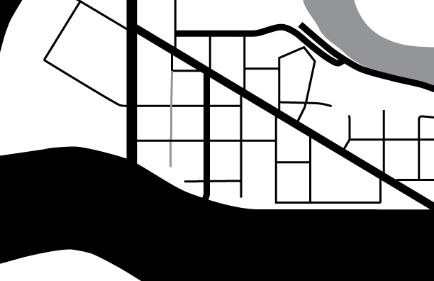
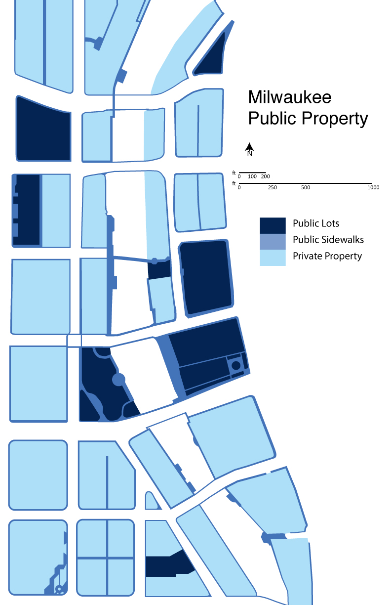
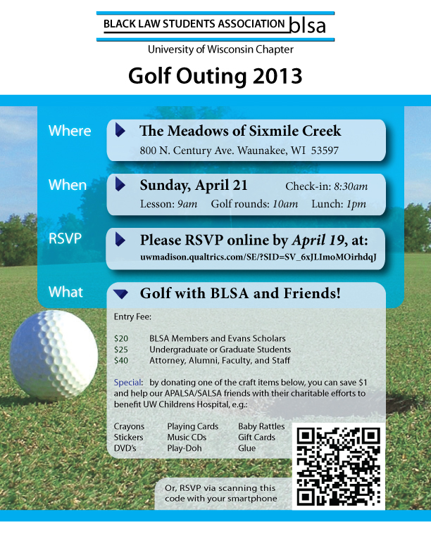
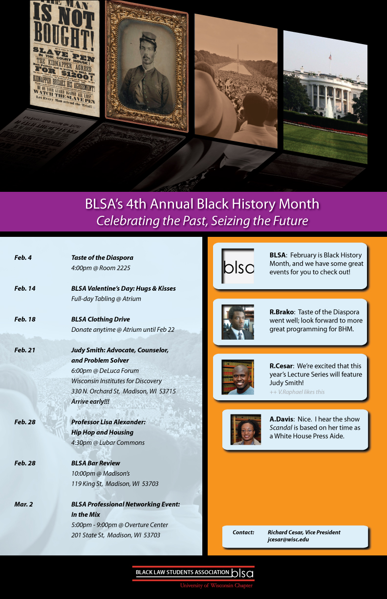
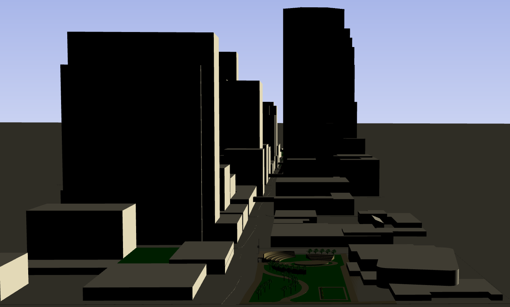
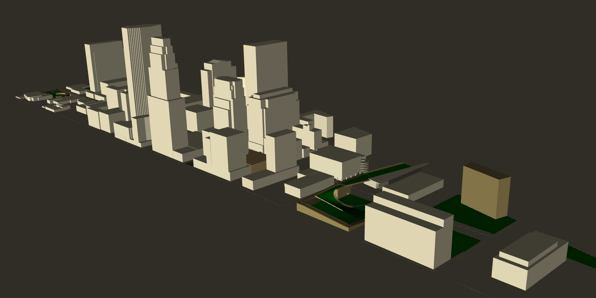
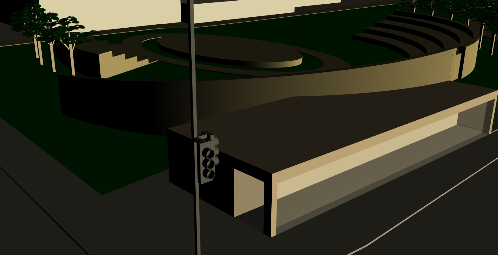

Greetings, you've reached Robert Brako's homepage.
I'm just your average Minnesotan with African parents who grew up in a small town. My hobbies include 2D and 3D design, and I do some programming (I use Java for the good stuff). I'll say I know CSS once I improve the layout here...
Most importantly, I can make peanut butter soup. If you haven't eaten that yet, then you have some catching up to do! With that said, I hope you enjoy my site.
Sincerely,
Robert M. Brako
B.S. Mathematics, Iowa State University
J.D., University of Wisconsin Law School
^ looked up GIS data, drew every parcel, and designed a coherent color scheme

^ traffic count data visualized by street widths. Guess which one is I-94...

^ I probably didn't need to draw the sidewalks with such detail

^ well, some snow showed up, but the weather was pretty nice by noon

^ obtaining dates, times, and locations from everyone was "valuable experience"
^ fun fact: I got to guard her briefcase while she spoke
^ done within 1 day; time is money, after all
^ people came from as far as Milwaukee; it was a good time
^ printed out at a hefty 35" x 42"

^ Model of every building from 1st to 12th St along Nicollet Mall.

^ Zoomed-out view of model

^ Close-up of proposed intervention at Peavey Plaza
^ Illustrator drawing of a character from Sayonara Zetsubou Sensei